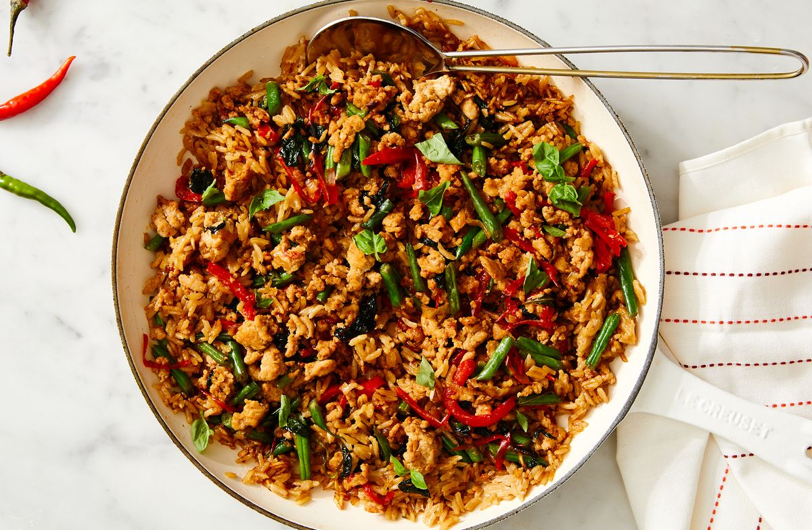

Thai Basil Chicken

Description
This totally delicious mashup of coconut rice
and Thai basil chicken gets dinner done in one
skillet and brings all the flavors of Thai cuisine
you crave into your home with ingredients you can
find in most grocery stores. Typically served over
steamed rice, preparing Thai basil chicken with rich,
creamy coconut rice is a great way to switch up the
dish.
Ingredients
- 1 tbsp. vegetable oil
- 1 small red bell pepper, thinly sliced
- 1 large shallot, halved and thinly sliced
- 3 garlic cloves, minced
- 1lb. ground chicken
- 1 Thai bird's eye chile, thinly sliced
- 4 oz. green beans
- 3 tbsp. oyster sauce
- 2 tsp. packed light brown sugar
- 1 cup fresh Thai basil leaves
- 1 1/4 cup jasmine rice
- 1 1/4 cup unsweetened full-fat coconut milk
- 1 1/4 cup water
- 1 tbsp. fresh lime juice
- salt
Steps
- In a large straight-sided skillet over
medium-high heat, heat oil. Add bell pepper,
shallot, and garlic and cook, stirring,
until fragrant, about 2 minutes. Increase
heat to high and add chicken, chile, and
white pepper. Cook, breaking up meat with a
wooden spoon and stirring occasionally, until
chicken is just cooked through and any liquid
is absorbed, 3 to 5 minutes.
- Add green beans, oyster sauce, fish sauce,
and brown sugar and stir to combine. Cook,
stirring frequently, until green beans are
crisp-tender, about 1 minute. Remove from
heat and stir in basil until just wilted,
about 20 seconds. Scrape chicken mixture into
a large bowl.
- Return skillet to medium-high heat and
cook rice, stirring constantly, until very
lightly toasted, about 30 seconds. Pour in
milk, water, lime juice, and 1/2 teaspoon
salt. Bring to a boil, cover, and reduce
heat to low. Gently simmer until rice is
tender and liquid is absorbed, 16 to 18
minutes. Fluff rice with a fork and return
chicken mixture to skillet, spooning over
rice. Cover and cook until chicken mixture
is heated through, about 1 minute more.